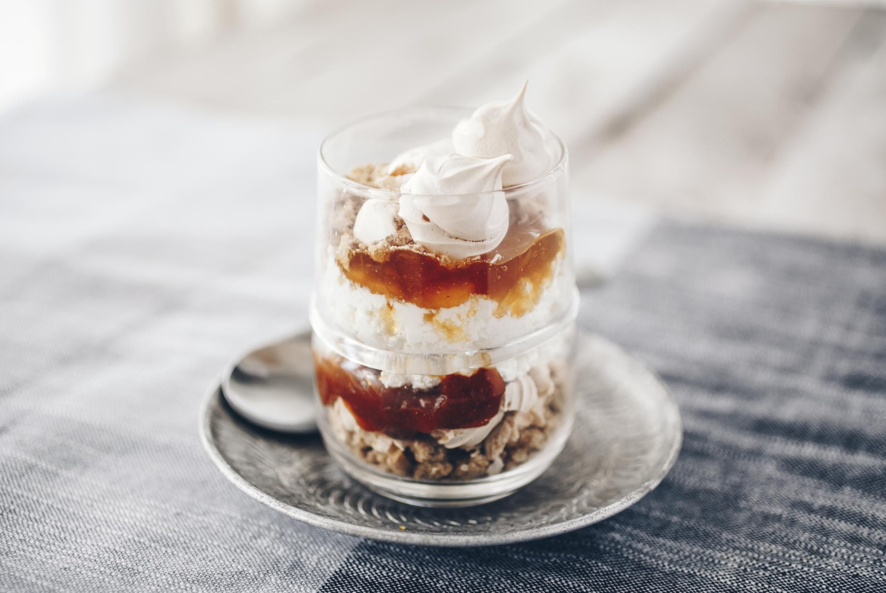

Elkészítés
- A lisztből a margarinnal, a porcukorral, a tojások sárgájával, késhegynyi szódabikarbónával, csipetnyi sóval és a tejföllel tésztát gyúrunk. Kinyújtjuk 1 cm vastagra, sütőpapírral bélelt tepsibe tesszük, majd 180 fokon 10 perc alatt félig megsütjük.
- A töltelék elkészítéséhez a túrót összekeverjük a kristálycukorral, a búzadarával, a tojássárgájával és a tejföllel. A tésztát vékonyan megkenjük lekvárral, azután rásimítjuk a tölteléket. Visszatesszük a sütőbe. 160 fokon 20 percig sütjük.
- A tetejére a tojásfehérjét a porcukorral (ki milyen édesen szereti), gőz fölött kemény habbá verjük, a túróra nyomjuk egy habzsákkal, rácsos alakzatban, majd így tovább sütjük 150 fokon 15 percig.